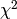
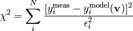
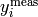
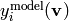
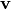
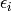
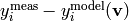

The lmfit package is designed to provide a simple way to build complex fitting models and apply them to real data. This chapter describes how to set up and perform simple fits. Some basic knowledge of Python, Numpy, and modeling data are assumed.
To do a least-squares fit of a model to data, or for a host of other optimization problems, the main task is to write an objective function that takes the values of the fitting variables and calculates either a scalar value to be minimized or an array of values that is to be minimized in the least-squares sense. For many data fitting processes, the least-squaers approach is used, and the the objective function should return an array of (data-model), perhaps scaled by some weighting factor such as the inverse of the uncertainty in the data. For such a problem, the chi-square () statistic is often defined as:

where  is the set of measured data,  is the model calculation,  is the set of variables in the model to be optimized in the fit, and  is the estimated uncertainty in the data.
In a traditional non-linear fit, one writes a function that takes the variable values and calculates the residual , perhaps something like:
def residual(vars, x, data):
amp = vars[0]
phaseshift = vars[1]
freq = vars[2]
decay = vars[3]
model = amp * sin(x * freq + phaseshift) * exp(-x*x*decay)
return (data-model)
To perform the minimization with scipy, one would do:
from scipy.optimize import leastsq
vars = [10.0, 0.2, 3.0, 0.007]
out = leastsq(residual, vars, args=(x, data))
Though it is wonderful to be able to use python for such optimization problems, and the scipy library is fairly easy to use, the approach here is not terribly different from how one would do the same fit in C or Fortran.
As described above, there are several practical challenges in doing least-squares fits and other optimizations with the traditional implementation (Fortran, scipy.optimize.leastsq, and most other) in which a list of fitting variables to the function to be minimized. These challenges include:
- The user has to keep track of the order of the variables, and their meaning -- vars[2] is the frequency, and so on.
- If the user wants to fix a particular variable (not vary it in the fit), the residual function has to be altered. While reasonable for simple cases, this quickly becomes significant work for more complex models, and greatly complicates modeling for people not intimately familiar with the code.
- There is no simple, robust way to put bounds on values for the variables, or enforce mathematical relationships between the variables.
The lmfit module is designed to void these shortcomings.
The main idea of lmfit is to expand a numerical variable with a Parameter, which have more attributes than simply their value. Instead of a pass a list of numbers to the function to minimize, you create a Parameters object, add parameters to this object, and pass along this object to your function to be minimized. With this transformation, the above example would be translated to look like:
from lmfit import minimize, Parameters
def residual(params, x, data):
amp = params['amp'].value
pshift = params['phase'].value
freq = params['frequency'].value
decay = params['decay'].value
model = amp * sin(x * freq + pshift) * exp(-x*x*decay)
return (data-model)
params = Parameters()
params.add('amp', value=10)
params.add('decay', value=0.007)
params.add('phase', value=0.2)
params.add('frequency', value=3.0)
out = minimize(residual, params, args=(x, data))
So far, this simply looks like it replaced a list of values with a dictionary, accessed by name. But each of the named Parameter in the Parameters object hold additional attributes to modify the value during the fit. For example, Parameters can be fixed or bounded, and this can be done when being defined:
params = Parameters()
params.add('amp', value=10, vary=False)
params.add('decay', value=0.007, min=0.0)
params.add('phase', value=0.2)
params.add('frequency', value=3.0, max=10)
or later:
params['amp'].vary = True
params['decay'].max = 0.10
Now the fit will not vary the amplitude parameter, and will also impose a lower bound on the decay factor and an upper bound on the frequency. Importantly, our function to be minimized remains unchanged.
An important point here is that the params object can be copied and modified to make many user-level changes to the model and fitting process. Of course, most of the information about how your data is modeled goes into the fitting function, but the approach here allows some external control as well.
create a Parameter object. These are the fundamental extension of a fit variable within lmfit, but you will probably create most of these with the Parameters class.
| Parameters: |
|
|---|
Each of these inputs is turned into an attribute of the same name. As above, one hands a dictionary of Parameters to the fitting routines. The name for the Parameter will be set to be consistent
After a fit, a Parameter for a fitted variable (ie with vary = True) will have the value attribute holding the best-fit value, and may (depending on the success of the fit) have obtain additional attributes.
the estimated standard error for the best-fit value.
a dictionary of the correlation with the other fitted variables in the fit, of the form:
{'decay': 0.404, 'phase': -0.020, 'frequency': 0.102}
For details of the use of the bounds min and max, see Bounds Implementation.
The expr attribute can contain a mathematical expression that will be used to compute the value for the Parameter at each step in the fit. See Using Mathematical Constraints for more details and examples of this feature.
create a Parameters object. This is little more than a fancy dictionary, with the restrictions that
1. keys must be valid Python symbol names (so that they can be used in expressions of mathematical constraints). This means the names must match [a-z_][a-z0-9_]* and cannot be a Python reserved word.
Two methods for provided for convenience of initializing Parameters.
add a named parameter. This simply creates a Parameter object associated with the key name, with optional arguments passed to Parameter:
p = Parameters()
p.add('myvar', value=1, vary=True)
add a list of named parameters. Each entry must be a tuple with the following entries:
name, value, vary, min, max, expr
That is, this method is somewhat rigid and verbose (no default values), but can be useful when initially defining a parameter list so that it looks table-like:
p = Parameters()
# (Name, Value, Vary, Min, Max, Expr)
p.add_many(('amp1', 10, True, None, None, None),
('cen1', 1.2, True, 0.5, 2.0, None),
('wid1', 0.8, True, 0.1, None, None),
('amp2', 7.5, True, None, None, None),
('cen2', 1.9, True, 1.0, 3.0, None),
('wid2', None, False, None, None, '2*wid1/3'))
Putting it all together, a simple example of using a dictionary of Parameter objects and minimize() might look like this:
from lmfit import minimize, Parameters, Parameter, report_errors
import numpy as np
# create data to be fitted
x = np.linspace(0, 15, 301)
data = (5. * np.sin(2 * x - 0.1) * np.exp(-x*x*0.025) +
np.random.normal(size=len(x), scale=0.2) )
# define objective function: returns the array to be minimized
def fcn2min(params, x, data):
""" model decaying sine wave, subtract data"""
amp = params['amp'].value
shift = params['shift'].value
omega = params['omega'].value
decay = params['decay'].value
model = amp * np.sin(x * omega + shift) * np.exp(-x*x*decay)
return model - data
# create a set of Parameters
params = Parameters()
params.add('amp', value= 10, min=0)
params.add('decay', value= 0.1)
params.add('shift', value= 0.0, min=-np.pi/2., max=np.pi/2)
params.add('omega', value= 3.0)
# do fit, here with leastsq model
result = minimize(fcn2min, params, args=(x, data))
# calculate final result
final = data + result.residual
# write error report
report_errors(params)
# try to plot results
try:
import pylab
pylab.plot(x, data, 'k+')
pylab.plot(x, final, 'r')
pylab.show()
except:
pass